Kauzak 재단은 전 세계의 뛰어난 음악가를 발굴하여, 초기 지원부터 저희 프라이빗 스튜디오인 더 볼트(The Vault)에서의 전문적인 녹음, 그리고 장기적인 커리어 성장에 이르기까지 완전한 아티스트 육성 경로를 제공합니다.
Kauzak 재단과 함께하는 모든 아티스트는 체계적인 육성 경로를 따릅니다. 각 단계는 신뢰를 쌓고, 실질적인 지원을 제공하며, 창의적인 돌파구를 마련할 수 있는 조건을 만드는 데 목적이 있습니다.
재단은 심층 조사를 통해 아티스트를 발굴합니다. 작품, 창작 철학, 음악 교육 배경, 재정 상황, 장기적 잠재력 등을 분석합니다. 정규 교육을 받았거나 자신의 분야에서 숙련된 기량을 입증한 아티스트를 찾습니다. 초기 접촉은 아티스트의 기존 플랫폼을 통해 이루어지며, 재단의 개입을 밝히기 전에 진정성 있는 관계부터 만듭니다.
진정한 신뢰는 말이 아닌 행동으로 얻어집니다. 재단은 웹사이트 제작, 기술 문제 해결, 재정적 지원 등 실질적인 도움을 제공하면서 아티스트와 진정성 있는 전문적 관계를 발전시킵니다.
관계가 무르익으면, 재단은 자체 자원과 제공 가능한 기회에 대해 더 많은 정보를 공유합니다. 영상 통화, 부지 소개, 창작 관련 논의를 통해 정식 스튜디오 초청을 위한 기반을 마련합니다.
더 볼트에 오기 전, 음악 교육 배경이 있는 아티스트는 재단이 현지에서 파트너십을 맺고 있는 전문 녹음 스튜디오로 보내집니다. 이 스튜디오들은 Emmy 수상 경력의 음향 엔지니어가 상주하며, 아티스트의 데모 트랙(보컬, 악기, 또는 둘 다)을 녹음합니다. 재단은 이후 녹음물을 검토하여 품질, 예술성, 다음 단계 준비도를 평가합니다.
재단이 스튜디오 녹음을 듣고 아티스트의 준비가 되었다고 확인하면, 정식 초청장이 전달됩니다. 더 볼트에서의 전액 지원 녹음 리트릿입니다. 아티스트는 미국으로 와서 10,000 제곱피트 규모의 프라이빗 레지던스에 단독 입주하게 됩니다. 한 번에 한 명의 아티스트만 — 일정 충돌도, 방해 요소도 없습니다. 항공편, 숙박, 식사, 장비, 프로덕션 등 모든 비용이 지원됩니다. 아티스트는 모든 스튜디오 장비, 소프트웨어, 워크스테이션에 완전하고 무제한적으로 접근하여, 본인의 페이스에 맞춰 믹싱, 동기화, 편집, 프로덕션을 직접 익힐 수 있습니다 — 엔지니어 없이, 중간자 없이.
콘텐츠 전략, 미국 시장 노출, 부킹 지원, 머천다이즈 개발, 그리고 재단 부지에서의 장기 아티스트 레지던시 가능성을 포함한 장기적 커리어 지원. 목표는 단 하나 — 아티스트가 오직 자신의 예술 활동만으로 생계를 유지할 수 있도록 돕는 것입니다.
플로리다에 위치한 10,000 제곱피트 규모의 프라이빗 뮤직 스튜디오 겸 아티스트 레지던스로, 2026년 6월 말 완공 예정입니다. 전문 녹음, 멀티카메라 영상 제작, 장기 아티스트 레지던시를 위해 전용으로 설계되었습니다. 레지던스에는 한 번에 한 명의 아티스트만 머무릅니다 — 일정을 공유할 필요도, 우선순위가 충돌할 일도 없습니다. 머무는 기간 동안 전체 부지가 오롯이 아티스트의 것입니다.
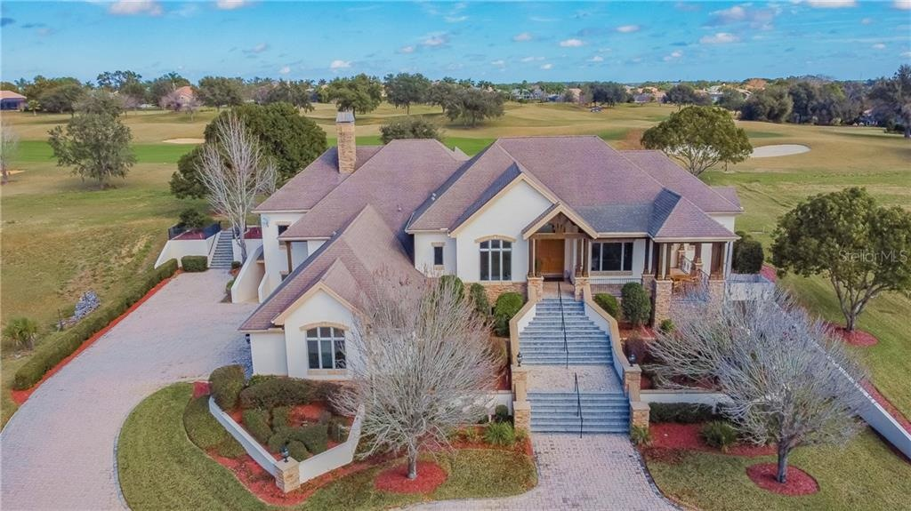
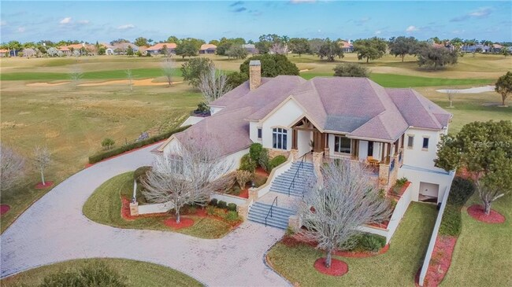
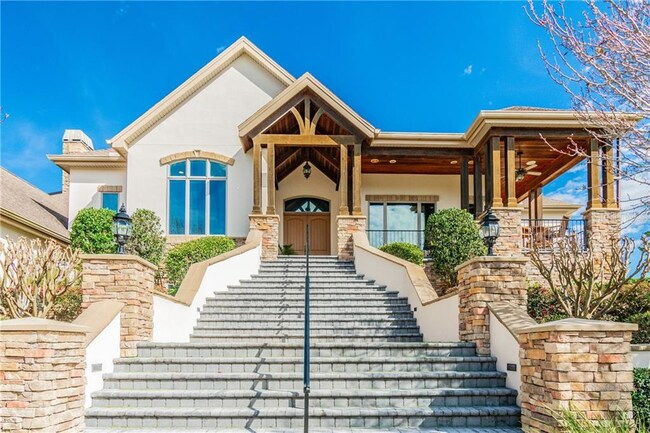
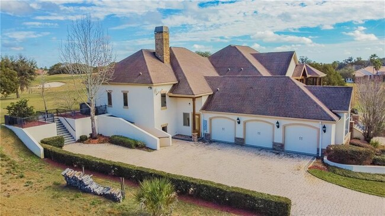
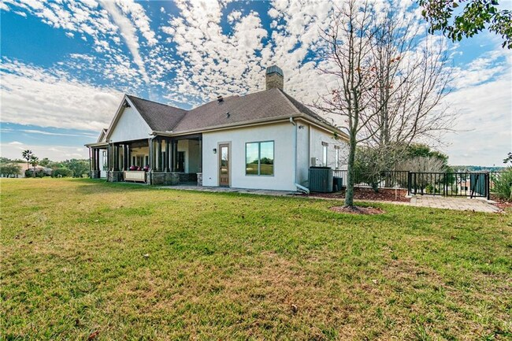
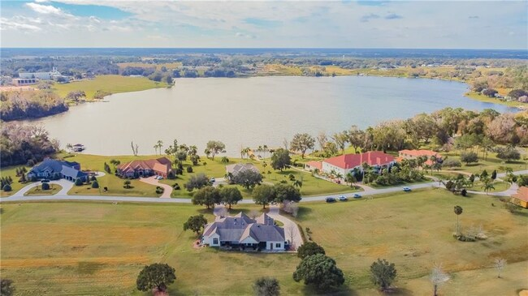
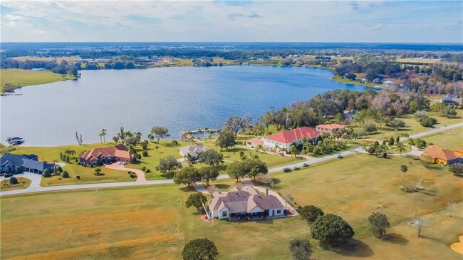
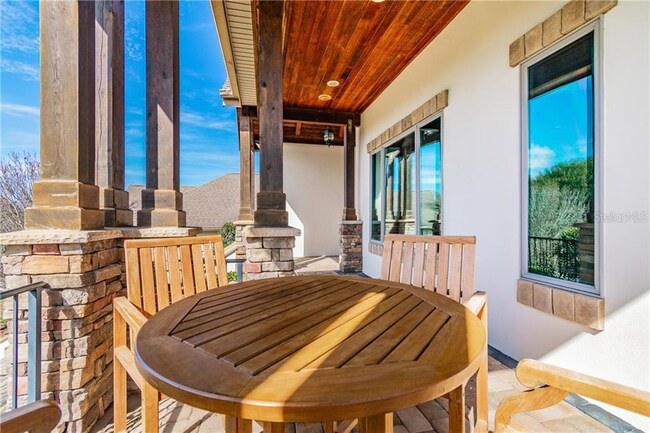
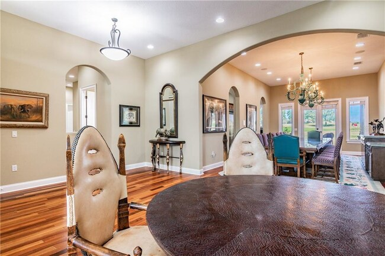
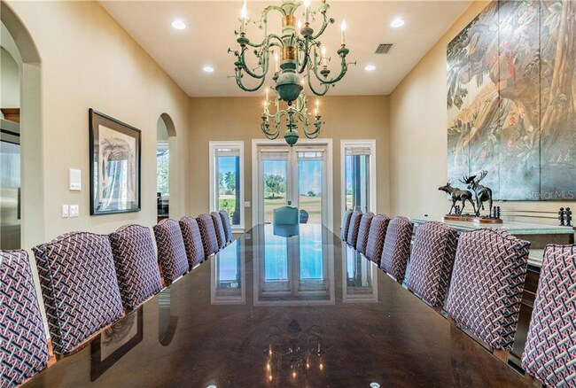
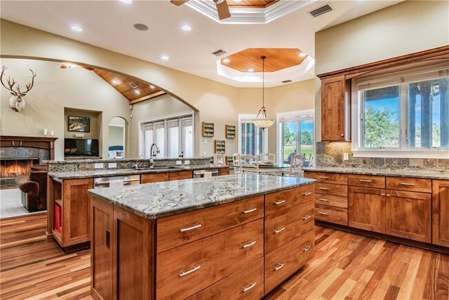
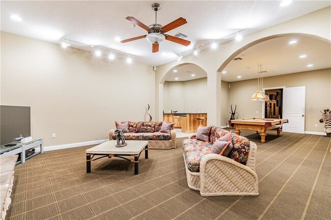
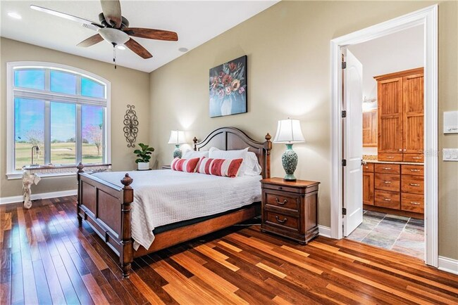
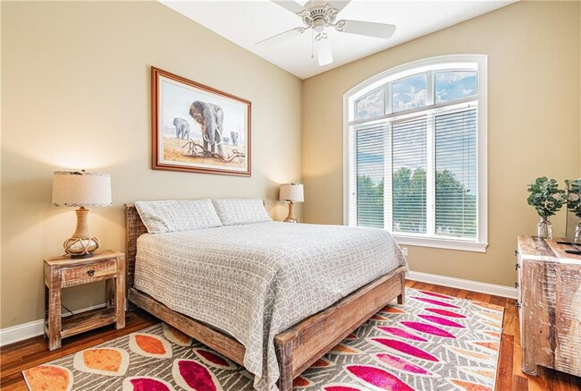
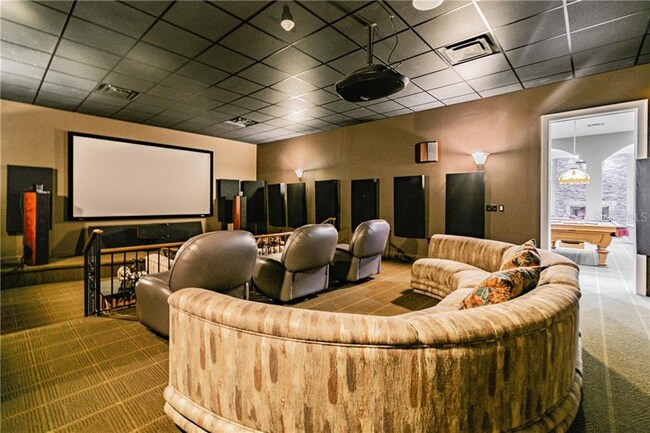
지하 콘크리트 뮤직 스튜디오 — 색상 팔레트, 평면도, 벽체 단면, 3D 투시도. 전체 설계 문서 보기 →
Kauzak 재단은 플로리다에 있는 다수의 건물로 구성된 부지에서 운영되며, 창작 활동, 아티스트 숙소, 영감을 위한 전용 공간이 마련되어 있습니다.
10,000 제곱피트 — 프라이빗 스튜디오 및 아티스트 레지던스
4,000 제곱피트
추가 숙소
22 에이커
본 부지에서 자동차로 5분
미국 플로리다
연중 아열대 기후
더 볼트는 DW DWe 무선 어쿠스틱-일렉트로닉 컨버터블 시스템을 중심으로 구성됩니다 — 전체 빌드에서 유일한 프리미엄 앵커입니다. 그 외에는 가성비 우선, 오픈소스 중심 철학을 따르며, 기존 스튜디오 비용의 일부만으로 전문가 수준의 결과물을 제공합니다.
DWe 7피스 산토스 로즈우드 하드 새틴 익조틱 한정판. DrumLink 기술을 통한 무선 어쿠스틱-일렉트로닉 컨버터블. 6.5×14″ 스네어, 7×8″ 및 8×10″ 랙 톰, 9×12″ 톰, 12×14″ 및 14×16″ 플로어 톰, 16×22″ 베이스 드럼, 그리고 더블 베이스 구성을 위한 매칭 22″ 베이스 드럼 1개 추가 포함.
하이햇 포함 13개 포지션 전체를 커버하는 풀 무선 심벌 리그: DECMHH14 하이햇 1개, DECMCR14 5개(스택, 팽, 벨, 스플래시 2개), DECMCR16 2개(크래시 2개), DECMCR18 6개 (크래시 2개, 차이나 2개, 라이드 2개). 모두 3존 트리거링과 360도 연주 지원. Roland 모듈이 각 존을 어떤 사운드에든 매핑합니다.
고성능 Windows 워크스테이션. Dell U2723QE 27″ 4K 디스플레이.
프리앰프 8개 + Behringer ADA8200 ADAT 확장기로 총 16개 입력.
Audix D6 2개(킥), SM57(스네어), CAD Stage 7 팩(톰), sE7 매치드 페어(오버헤드), Cascade Fat Head 리본(룸).
근접장 페어 + WS-6.2 서브우퍼. 정밀 청취용 Beyerdynamic DT 770 Pro.
APS-C 센서, 4K 녹화. Blackmagic ATEM Mini Pro로 실시간 스위칭 및 YouTube 스트리밍.
GrandTouch 액션, CFX 및 Bösendorfer 샘플, 내장 스피커가 포함된 그랜드 캐비닛. 풀사이즈 디지털 베이비 그랜드.
전문가 수준의 도구를 일부 비용으로. 오픈소스 소프트웨어는 오디오·영상 프로덕션 분야에서 프리미엄 상용 대안과 동등한 수준에 도달했습니다. 모두 Windows PC에 설치되어 바로 사용할 수 있습니다.
디지털 오디오 워크스테이션
전문 영상 편집기
기타 앰프 시뮬레이션
드럼 샘플 라이브러리
신디사이저
믹싱 및 마스터링 플러그인
레지던시 중인 모든 아티스트는 DrumSyncer에 독점적으로 접근할 수 있습니다 — Kauzak 재단이 드럼 커버 영상 제작을 위해 자체 개발한 AI 기반 소프트웨어입니다. YouTube 링크를 붙여넣거나 영상을 업로드하면, DrumSyncer가 나머지 모든 작업을 자동으로 처리합니다.
YouTube URL을 붙여넣으면 yt-dlp를 통해 영상이 자동 다운로드됩니다. 수동 다운로드도, 브라우저 확장 프로그램도 필요 없습니다.
Meta의 Demucs AI 기반. 모든 트랙에서 드럼, 베이스, 보컬, 기타 악기를 분리해냅니다. 원곡의 드럼을 제거하여 본인의 드럼으로 대체할 수 있습니다.
원곡과 본인의 드럼 녹음에서 BPM과 비트 위치를 자동 분석하여 샘플 단위로 정확히 정렬합니다. 수동 그리드 매칭이 필요 없습니다.
최종 드럼 오디오를 원본 영상 타임라인에 자동 동기화합니다. 본인의 드럼이 믹스된 완성된 게시 가능한 영상 파일로 내보냅니다.
브라우저 기반 GUI — 커맨드 라인이 필요 없습니다. Windows PC 워크스테이션에서 로컬로 실행되는 깔끔한 웹 인터페이스에서 업로드, 설정, 처리, 내보내기까지.
YouTube 링크에서 완성된 드럼 커버 영상까지 단 몇 분이면 됩니다. 수 시간이 걸리던 수동 편집이 AI와 신호 처리로 자동화됩니다.
더 볼트는 헤비 드럼을 위해 설계되었습니다. 폼도 없고, 편법도 없습니다. 킥 드럼이 위치하는 40Hz 대역까지 저주파 제어가 가능하도록 설계된 전문가급 파이버글래스 및 미네랄울 트리트먼트입니다.
네 모서리 모두 바닥부터 천장까지 슈퍼청크 트랩. 4″ OC 703 또는 Rockwool RS60+. 40Hz까지 흡음. 베이스 피크 10-15dB 제거.
프레임 패널 안에 4″ OC 703, 최소 4′×6′, 천장으로부터 18-24″ 내려서 드럼 키트 바로 위에 설치. 심벌과 스네어의 플러터 에코를 제거합니다.
첫 반사 지점에 2″ 에어 갭이 있는 4″ 패널. 벽면 30~40% 커버리지. 미러 트릭 배치. 룸은 여전히 숨을 쉽니다 — 과도한 처리는 없습니다.
8″ 콘크리트 쉘 → 3.5″ Rockwool(NRC ≥ 1.0)이 들어간 2×4 퍼링 → 네이비 어쿠스틱 패브릭 → 1″ 간격의 3/4″×1.5″ 세로 버치 슬랫. 슬랫 사이로 네이비가 비치며 Kauzak 브랜드 시그니처를 형성합니다. HF는 슬랫에서 산란되고, LF/MF는 미네랄울로 통과합니다. 전체 벽체 단면은 설계 문서에서 확인할 수 있습니다.
두 가지 흡음재. 스터드 공동에는 광대역 흡음을 위한 Rockwool RS60+. 키트 위 천장 클라우드에는 Cedar QRS 스카이라인 디퓨저 블록. 세 면의 벽은 옐로 버치 슬랫, 남쪽(카메라) 벽은 따뜻함을 위한 세다. 클라우드 뒷면에는 네이비 다크 패브릭. 드럼 플랫폼에는 DMX 프로그래머블 시안 LED 언더글로우.
Kauzak 재단은 세계적인 재능을 가졌으나, 지속 가능한 커리어를 구축할 자원, 인맥, 또는 기회가 부족한 음악가들을 지원하기 위해 존재합니다.
우리는 팔로워가 아닌 재능에 투자합니다. 작품이 모든 것을 말합니다. 모든 결정은 "이것이 아티스트의 음악에 도움이 되는가?"에서 시작합니다.
정신 건강, 재정적 안정, 창작의 자유는 별개의 문제가 아닙니다. 우리는 결과물이 아니라 사람 전체를 봅니다.
오픈소스 도구, AI 혁신, 음악 교육 프로그램. 기술은 진입 장벽을 낮추는 도구여야 하지, 높이는 도구가 아닙니다.
Kauzak 재단은 미국 주요 드럼 업계 브랜드와 협력하여 레지던시 아티스트를 위한 장비 후원을 확보합니다. 이러한 파트너십은 아티스트에게 전문가급 장비와 브랜드 노출을 제공하여 커리어를 시작할 수 있도록 돕습니다.
🔒 후원 자격: 장비 후원은 더 볼트에서의 장기 레지던시를 약정한 아티스트에게 제공됩니다. 단기 녹음 리트릿의 경우 재단 보유 장비 전체를 사용할 수 있지만, 브랜드 후원 파트너십은 지속적인 사용과 노출을 입증할 수 있는 장기 아티스트 인 레지던스 약정이 필요합니다.
Kauzak 재단은 국제 아티스트가 미국 이민 절차를 헤쳐 나갈 수 있도록 함께합니다. 여권, 비자 신청, 법적 서류 작성에 도움을 드려, 아티스트가 서류 작업이 아니라 자신의 작품에 집중할 수 있도록 합니다.
여권 신청, 갱신, 미국 입국에 필요한 모든 서류 작업을 지원합니다. 재단이 안내와 함께 처리 수수료에 대한 재정적 지원을 제공합니다.
녹음 리트릿을 위한 표준 비자로 첫 방문 — 항공편, 숙박, 프로덕션 모두 전액 지원. 호흡을 맞추고 장기적 적합성을 평가하는 시험 기간입니다.
잘 맞는다고 확인되면, 재단이 장기 비자로의 전환과 연장된 아티스트 레지던시를 지원합니다. 법률 지원, 후원 서신, 그리고 지속적인 재정 지원을 제공합니다.
여권 신청 수수료 및 처리 비용, 비자 신청 및 법적 서류 작성 비용, 국제 왕복 항공권, 전체 기간 동안의 더 볼트 숙박, 식비 및 생활비, 지상 교통편, 그리고 모든 스튜디오 이용 — 아티스트는 비용을 부담하지 않습니다. 모든 단계에서 아티스트의 비용은 0원입니다.
국제 아티스트는 90일 녹음 리트릿으로 시작합니다. 그 기간 동안 작업 관계, 창작 결과물, 장기적 잠재력을 평가합니다. 양측 모두 잘 맞는다고 동의하면, 재단은 장기 비자 절차에 들어가 아티스트가 더 볼트에서 무기한으로 레지던시와 커리어 개발을 이어갈 수 있도록 합니다.
모든 양식은 작성 가능한 PDF입니다 — 브라우저에서 열어, 디지털로 작성 후 인쇄하십시오. 이메일 전송이 필요 없습니다. 필요한 양식을 작성하여 대사관 면접에 가져가시거나, 직접 재단에 제출하시면 됩니다. 양식은 미국 대사관 및 USCIS 요구사항에 따라 영문으로 작성되어 있습니다.
3페이지 분량의 신청서로, 개인 정보, 음악 배경 및 학력, 장르, 온라인 활동, 재정 상황, 여행 상태, 목표를 다룹니다. 여기서 시작하십시오.
신청서 열기 (PDF)East Seoul Studios에서의 스튜디오 세션에 적용되는 협약서 — 재단이 제공하는 것, 아티스트가 받는 것, 녹음물에 대한 권리, 인세 처리 방식이 명시되어 있습니다. 아티스트는 본인 작품의 100%를 보유합니다.
English (PDF) 한국어 (PDF)첫 방문(90일 녹음 리트릿)을 위한 양식입니다. 재단은 이 양식을 활용해 미국 대사관 면접에 필요한 공식 초청장을 준비합니다. 여권, 여행, 본국 연고를 다룹니다.
B-1/B-2 양식 열기 (PDF)예술 분야에서 특별한 능력 또는 성취를 보유한 아티스트를 위한 비자. 수상 경력, 비평, 또는 공연에서의 주도적 역할에 대한 증빙이 필요합니다. 재단이 청원서를 후원합니다.
O-1B 양식 열기 (PDF)투어, 음반 발매, 미디어 노출 등을 통해 국제적 인지도를 보유한 아티스트를 위한 비자. 솔로 아티스트 또는 그룹 멤버 자격으로 신청할 수 있습니다. 재단이 후원 기관으로 활동합니다.
P-1B 양식 열기 (PDF)